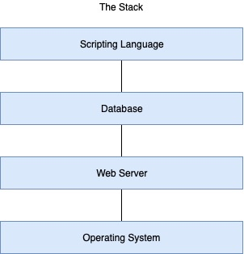
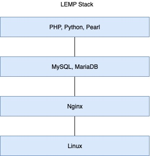

What is Nginx?
- High performance web server
- Excels at servicing static content
- Load balancer
Comparing Nginx to Apache
What do they have in common?
- Both are free and open source software
- Community of users review the code
- Added functionality through dynamic modules
- Both can be configured as proxy servers
- Event-based processing for large numbers of connections
Differences
| Apache |
NGINX |
| Configuration: XML syntax |
Configuration: C-like syntax |
| Distributed .htaccess files |
Centralized location blocks |
| Dynamic content is natively processed with modules |
Dynamic content requires external processing |
| Static content is less efficient |
Static content is more efficient |
| Caching and load balancing capabilities with modules |
Native caching and load balancing capabilities |
Why Choose Nginx?
- Its popularity is growing
- It’s efficient
- It has consisten performance under heavy load
- It’s easier to configure than apache
Install and Configure NGINX
You need to install NginxCheck the status of the Nginx running process
Nginx Files and Directories
Get familiar with some of the files and directories that are key to running NginxDirectory that holds that configuration files
The main configuration file:
We will also encounter some familiar directories that function almost the same as with Apache2; the following directories are used for virtual hosts
/etc/nginx/sites-available/
/etc/nginx/sites-enabled/
In the /etc/nginx/sites-available
Other important directories for storing log files and serving web content include:
and
Managing Nginx throught the Command-Line:
systemctl stop nginx
systemctl start nginx
systemctl status nginx
systemctl reload nginx
service nginx start
service nginx stop
service nginx restart
service nginx reload/graceful
Using Nginx Command Directly
To get a list of the switches (Show us flags to use with the nginx command):
Usage: nginx [-?hvVtTq] [-s signal] [-c filename] [-p prefix] [-g directives]
Options:
-?,-h : this help
-v : show version and exit
-V : show version and configure options then exit
-t : test configuration and exit
-T : test configuration, dump it and exit
-q : suppress non-error messages during configuration testing
-s signal : send signal to a master process: stop, quit, reopen, reload
-p prefix : set prefix path (default: /usr/share/nginx/)
-c filename : set configuration file (default: /etc/nginx/nginx.conf)
-g directives : set global directives out of configuration file
Nginx Main Configuration File
This config file is located at
The default configuration file should look like this:
user www-data;
worker_processes auto;
pid /run/nginx.pid;
include /etc/nginx/modules-enabled
Individual configurations for individual projects can be read from /etc/nginx/conf.d and /etc/nginx/sites-enabled
Test virtual host liberatualma.conf on the /etc/nginx/nginx.d/ directory; notice that could have been stored on sites-available and then enabled to appear on sites-enabled
server{
listen 80 default_server;
server_name jorgearuiz.net www.jorgearuiz.net;
index index.html;
root /etc/www/html/liberatualma;
}
We add the "default_server" statement to tell nginx to use this server configuration if no other configurations match the name of the site being requested.
Location Directive
Location directives allows us to extend our configuration based on URI or a Uniform Resource Indicator that makes up the request being processed by the server.server {
location [modifier] location_definition {
...
location [modifier] location_definition {
}
}
}
When we define a location, we use the location keyboard, an optional modifier and a required location definition. Location directives are formatted as blocks and are defined inside server blocks. They can also be nested inside other location blocks.
location / {
try_files $uri $uri/ =404;
}
We will add the URI variable followed by a slash. To test for any directories that might match. We will also add =404 to tell Nginx to serve a 404 error if no file or directory matches the URI being requested.
Checks the existence of files in the specified order and uses the first found file for request processing; the processing is performed in the current context. [...] If none of the files were found, an internal redirect to the uri specified in the last parameter is made.
location /images {
autoindex on;
}
The auto index directive will let the browser list the files in that directory (Open directory). This means that we will be able to see the files in that directory from a browser.
error_page 404 /404.html;
location = /404.html {
internal;
}
error_page 500 502 503 504 /50x.html;
location = /50x.html{
internal;
}
We can also use locations to server custom error pages
Final virtual host file example:
server{
listen 80 default_server;
server_name jorgearuiz.net www.jorgearuiz.net;
index index.html index.htm index.php;
root /var/www/html/liberatualma;
location / {
try_files $uri $uri/ =404;
}
location /images {
autoindex on;
}
error_page 404 /404.html;
location = /404.html {
internal;
}
error_page 500 502 503 504 /50x.html;
location = /50x.html{
internal;
}
}
To log activity add the log directives to your virtual host
access_log /var/log/nginx/libera.access.log;
error_log /var/log/nginx/libera.error.log;
The complete virtual host should look like this:
server{
listen 80 default_server;
server_name jorgearuiz.net www.jorgearuiz.net;
index index.html index.htm index.php;
root /var/www/html/liberatualma;
access_log /var/log/nginx/libera.access.log;
error_log /var/log/nginx/libera.error.log;
location / {
try_files $uri $uri/ =404;
}
location /images {
autoindex on;
access_log /var/log/nginx/libera.access.log;
error_log /var/log/nginx/libera.error.log;
}
error_page 404 /404.html;
location = /404.html {
internal;
}
error_page 500 502 503 504 /50x.html;
location = /50x.html{
internal;
}
}
Troubleshooting Nginx
Catch using nginx configuration errors using the configuration testing flag
Also check check for typos in your server name and root directives
Site can’t be reached?
- Make sure Nginx is running
- Reload Nginx configuration
- Verify that ports open
- sudo lsof -P -n -i :80 -i :443 | grep LISTEN
- sudo netstat -plan | grep nginx
- Tail the logs
tail -f /var/logs/nginx/*.log
- Seek online help
The LEMP Stack
The term stack describes the environment where these sites and apps are developed and served from. 
Installing the LEMP stack:
apt-get install php-fpm php-mysql
Make sure the PHP fast CGI process manager is running:
systemctl status php7.2-fpm
We now need to edit our conf file so that Nginx can communicate with PHP. We add the following directives in our virtual host.
location ~ \.php$ {
include snippets/fastcgi-php.conf;
fastcgi_pass unix:/var/run/php/php7.2-fpm.sock;
fastcgi_intercept_errors on;
}
Now install the dabase component of the LEMP stack
apt-get install mariadb-server mariadb-client
Securing Database InstallationSteps required for production systems
- Set a root password
- Disable remote connections for the root account
- Remove anonymous accounts
To secure you database installation run: mysql_secure_installation
At this point our virtual host should look like this
server{
listen 80 default_server;
server_name jorgearuiz.net www.jorgearuiz.net;
index index.html info.php;
root /var/www/html/liberatualma;
access_log /var/log/nginx/libera.access.log;
error_log /var/log/nginx/libera.error.log;
location / {
try_files $uri $uri/ =404;
}
location ~ \.php$ {
include snippets/fastcgi-php.conf;
fastcgi_pass unix:/var/run/php/php7.2-fpm.sock;
fastcgi_intercept_errors on;
}
location /images {
autoindex on;
access_log /var/log/nginx/libera.access.log;
error_log /var/log/nginx/libera.error.log;
}
error_page 404 /404.html;
location = /404.html {
internal;
}
error_page 500 502 503 504 /50x.html;
location = /50x.html{
internal;
}
}